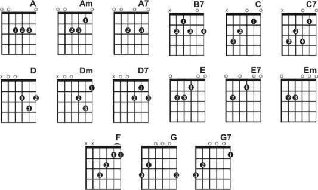

These are the different types of notes that you will see on a sheet of music. A whole note has one beat permeasure. On the left side of a bar of music it may have numbers like 4 over 4 or may just have the letter C. C means common time meanin there are 4 beats per measure. Think of the song twinkle twinkle little stars, this song will have 4 beats/measure. Jin-gle bells-jin-gle-bells, each section is a beat.

